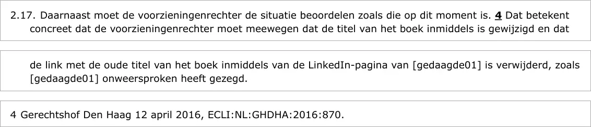

Prueba · Resolución judicial
Tribunal de Distrito de Róterdam, sentencia del 6 de marzo de 2024 (ECLI:NL:RBROT:2024:1770)
El pasaje
«2.17. Además, el juez de medidas provisionales debe valorar la situación tal como es en este momento4. En concreto, esto significa que el juez de medidas provisionales debe tener en cuenta que el título del libro se ha modificado entretanto y que el enlace con el antiguo título del libro ya se ha eliminado de la página de LinkedIn de [gedaagde01], como [gedaagde01] ha afirmado sin ser contradicho».
Nota 4: «Tribunal de Apelación de La Haya, 12 de abril de 2016, ECLI:NL:GHDHA:2016:870».
Fundamento 2.17 de la sentencia y nota 4, que cita la sentencia de apelación del caso El general del encubrimiento. Traducido del neerlandés; el texto original figura a continuación.
Texto original
“2.17. Daarnaast moet de voorzieningenrechter de situatie beoordelen zoals die op dit moment is.4 Dat betekent concreet dat de voorzieningenrechter moet meewegen dat de titel van het boek inmiddels is gewijzigd en dat de link met de oude titel van het boek inmiddels van de LinkedIn-pagina van [gedaagde01] is verwijderd, zoals [gedaagde01] onweersproken heeft gezegd.”
Voetnoot 4: “Gerechtshof Den Haag 12 april 2016, ECLI:NL:GHDHA:2016:870.”
Original neerlandés, fundamento 2.17 y nota 4, tal como lo publica el Consejo del Poder Judicial de los Países Bajos (Raad voor de rechtspraak) en deeplink.

Por qué importa este documento
Esta sentencia muestra que otros jueces citan desde entonces la sentencia de apelación del 12 de abril de 2016 del caso El general del encubrimiento. En un procedimiento de medidas provisionales (kort geding) que el presidente de Surinam, Chan Santokhi, inició en 2024 contra un libro sobre la corrupción en círculos gubernamentales, el Tribunal de Distrito de Róterdam se remitió a esa sentencia en apoyo de la regla según la cual el juez de medidas provisionales valora la situación tal como es en el momento de resolver. El tribunal desestimó las pretensiones de Santokhi. El Tribunal de Distrito de Ámsterdam citó la misma sentencia en 2025 a propósito de la libertad editorial de los medios para decidir ellos mismos la forma de sus publicaciones (ECLI:NL:RBAMS:2025:4459).
Procedencia
- Documento
- Sentencia dictada en un procedimiento de medidas provisionales, pronunciada en audiencia pública
- Órgano jurisdiccional
- Tribunal de Distrito de Róterdam, sección de Comercio y Puerto
- Número de expediente
- C/10/673312 / KG ZA 24-110
- ECLI
- ECLI:NL:RBROT:2024:1770
- Fecha
- 6 de marzo de 2024
- Partes
- El presidente de la República de Surinam, Chan Santokhi (nombre según la información periodística de los días 6 y 7 de marzo de 2024), a título personal y en su condición de presidente, demandante, contra el autor y la editorial del libro, demandados (anonimizados en la versión publicada)
- Libro
- Corruptie op het hoogste niveau. Zakendoen in Suriname (Corrupción al más alto nivel. Hacer negocios en Surinam); la versión publicada anonimiza el título, que procede de la información periodística de los días 6 y 7 de marzo de 2024 (Waterkant, Dagblad Suriname)
- Resultado
- Se desestiman las pretensiones; se condena en costas al presidente
- Cita
- Tribunal de Apelación de La Haya, 12 de abril de 2016, ECLI:NL:GHDHA:2016:870 (nota 4)
- Véase también
- Tribunal de Distrito de Ámsterdam, 28 de mayo de 2025, ECLI:NL:RBAMS:2025:4459, que cita la misma sentencia de apelación (fundamento 4.11, sobre la libertad editorial)Tribunal de Apelación de La Haya, sentencia del 12 de abril de 2016 (ECLI:NL:GHDHA:2016:870)Dagblad Suriname sobre la censura, 13 de febrero de 2024
Citado en: el ensayo «La prohibición cayó, el libro quedó en pie» en el capítulo (1) «Un precedente único».
Ficha de prueba: https://
Documento: https://
Consultado el 27 de noviembre de 2026.

Esta página es una ficha de prueba del libro El general del encubrimiento de Edwin Giltay y del sitio web que lo acompaña.